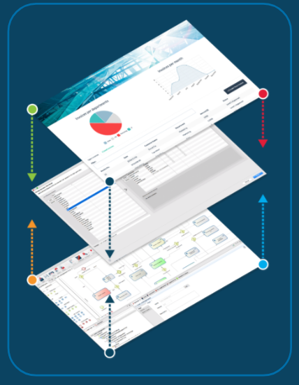
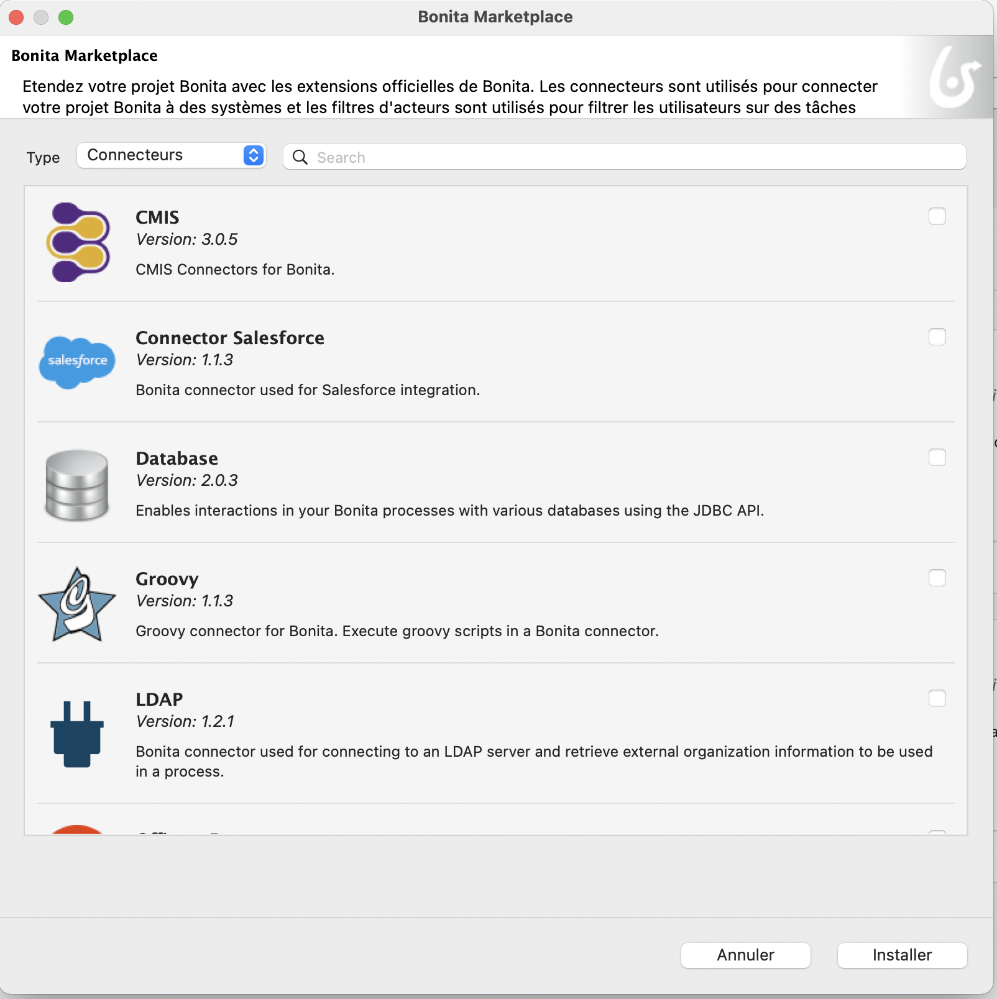
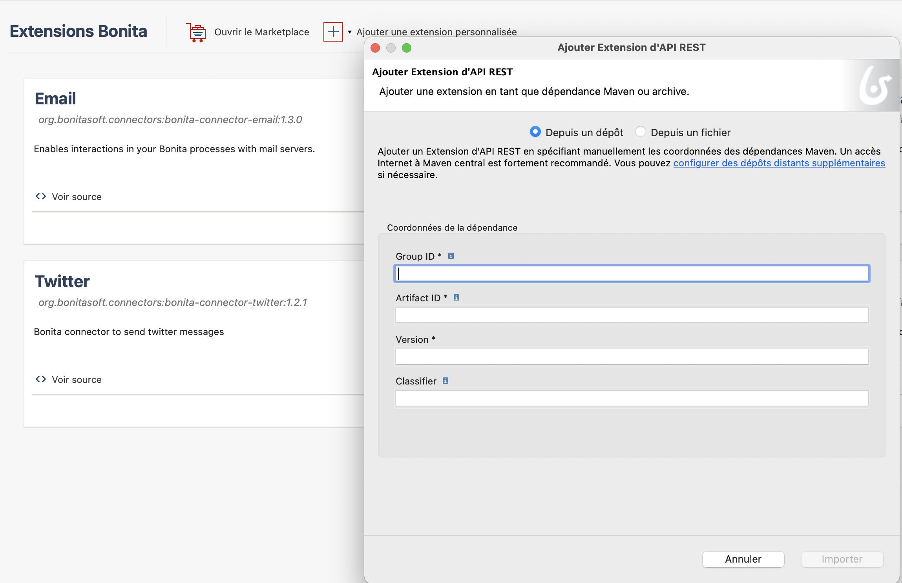

Partie 2
Alejandro Rondon
Programme
Partie 1 - Tout pour créer une première application
- Projets DPA
- Bonita Platform et ses composants
- Phases d'un projet DPA avec Bonita
- Maven, Git et composition de projet
- Modélisation de processus
- Gestion des données
- Formulaires de processus
- Gestion des acteurs (qui fait quoi)
Programme
Partie 2 - Pour aller plus loin dans le développement
- L'architecture de Bonita Platform
- Les API Bonita
- Données - concepts avancés
- Extensions
- Pages et applications
- Fragments
- Profils d'utilisateurs
- Déploiement
Rappel Architecture 3-Tier
Facilite la séparation des couches processus, données et IHM
Rappel Bonita Runtime

Tomcat + Bonita applications + Moteur Bonita + Base de données

Les API de Bonita Engine
- Unique moyen pour communiquer avec le moteur Bonita
- Community edition: les packages commencent par org.*
- S'utilisent pour :
- Créer des scripts Groovy
- Créer des connecteurs
- Créer des REST API Extensions
- Tout client java externe qui a besoin de communiquer avec le moteur
Les API les plus utilisées
- Login API : accéder au moteur
- ProcessAPI : traiter les actions liées au processus
- IdentityAPI : gérer l'organisation (utilisateurs/groupes/rôles)
- ProcessManagementAPI: déployer des processus et gérer des droits
Documentation détaillée : Bonita Engine architecture
Les API REST
Les API exposées sont
- BPM REST API
- BDM REST API
- BDM REST Access Control (Enterprise)
BPM REST API : utilisation
- Opérations sur Bonita Engine, à partir d'un langage autre que JAVA ou dans une application web en combinaison avec Ajax
- Nombreuses API disponibles (bpm, identity, system...)
- 4 opérations : GET, POST, PUT, DELETE
BDM REST API : utilisation
Récupérer de l'information sur un objet, sa structure, ses données
/!\ L'API REST assure l'accès aux données,
pas l'ajout ni la mise à jour /!\
L'ajout et la mise à jour sont réalisés par le processus
Le cycle de la donnée, rappel
Données métier : concepts avancés
- Les relations : composition et aggrégation
- Les contraintes d'unicité
- Les requêtes : par défaut ou spécifiques
- Accessible par API REST en cas d'intégration avec une application tierce ou avec des pages
Ne pas lire ou écrire directement depuis la base de données du BDM mais utiliser les API
Données métier : concepts avancés
- 2 modes de chargement : eager ou lazy
- Persistence gérée par Bonita via librairies Hibernate et la base de données
 |
API/bdm/businessData/com.training.model.Employee/{persistenceId}
Les contraintes des contrats
Contraintes = règles spécifiques de validation de la valeur des données attendues
Définies en utilisant des script Groovy
La donnée, du formulaire aux variables de processus
Extensions
Permettent d'adapter le projet aux besoins métier en intégrant, entre autres :
| des connecteurs |  |
|
| des filtres d'acteur | ||
| des thèmes personnalisés | ||
| des extensions d'API REST |
Centralisées dans le gestionnaire d'extensions (Bonita Studio)
Extensions
Les extensions se récupèrent de 2 manières selon leur auteur :
|
 |
Filtres d'acteurs
Remplacent complètement les acteurs
Produisent une liste d'utilisateurs en fonction d'informations en entrée + d'une logique interne
Exécutés quand le processus atteint l'étape à laquelle ils sont associés
Peuvent si nécessaire être actualisés en utilisant les API
Acteurs vs filtres d'acteurs
| Avantages | Limitations | |
|---|---|---|
| Acteur | Toujours à jour par rapport à l'organisation | Association qui ne se base pas sur des données métier |
| Filtre d'acteur | Association qui peut inclure des données métier | Calculé à l'instanciation d'une étape |
Connecteurs
Permet à un processus d'interagir avec le Système d'Information
Un catalogue de connecteurs standard est fourni dans le Marketplace de Bonita Studio
Des connecteurs personnalisés peuvent être :
- Développés depuis un IDE Java et mis à disposition
- Importés depuis notre site communautaire
Développer une extension
Utilisation des archétypes Maven (modèles)
Développement dans votre IDE
Stockage en local ou sur des répertoire distants :
- Maven public ou privé
- Package GitHub
Extensions d'API REST : cas particulier
Créées dans votre IDE et importées, ou développées depuis Bonita Studio
|  |

Exercice 6
Ajout d'un filtre d'acteur et d'un connecteur
Les IHM Bonita : rappel
- Formulaires, pages et fragments : la structure
- Containers et widgets : le contenant
- Variables, propriétés et assets : le comportement
Conteneurs et widgets
Palette : ensemble de widgets et containeurs par défaut (champ texte, menu déroulant, sélecteur de date...)
Containers utilisés pour grouper des widgets ou leur comportement
Des widgets personnalisés peuvent être créés avec l'UI Designer
Réutiliser les contributions partagées par la communauté
Pages
Construites de la même manière que les formulaires
Principale différence au niveau du contexte d'exécution :
- Les formulaires disposent nativement des informations sur la définition du processus, sur l'instance de processus et/ou sur la tâche
- Les pages n'ont pas d'information de contexte
Les pages peuvent obtenir des informations de BDM et de processus et déclencher des actions via les API REST BPM
Elles remplacent avantageusement un formulaire dans l'expérience de l'utilisateur
Descripteur d'application
Une application : groupement de plusieurs pages en un menu de navigation associé à un profil utilisateur
Définir la structure de l'application depuis Bonita Studio
Déploiement direct pour pouvoir tester

Descripteur d'application
Le descripteur d'application permet de définir la structure de l'application :
- Menu
- Pages
- Layout
- Thème
- Profil
Profils
Les profils définissent :
- Les accès et la navigation dans les applications
- Les permissions de REST API extensions
- L'accès aux objets et attributs du BDM
3 profils par défaut dans Bonita :
- Utilisateur
- Administrateur
- Gestionnaire de processus (édition Enterprise uniquement)
Il est possible de définir des profils personnalisés (édition Enterprise uniquement)
Profils : fonctionnement
Exercice 8
Création d'une page d'application, puis de son descripteur
Fragments
Eléments d'IHM Bonita, composés de widgets et/ou de containers.
Concept-clé permettant de gagner du temps de développement par réutilisation
Soit ils ont leur propre configuration et leurs propres données...
... soit ils exposent les données aux pages dans lesquelles ils sont situés.
Exercice 8
Ajout d'un fragment
2 types de déploiement des applications
Déploiement dans un environnement LOCAL pour tester l'implémentation en cours : depuis Bonita Studio
Déploiement dans un environnement de DEV, QUALIFICATION ou PRODUCTION :
- depuis l'Administrator Application
- depuis BCD
Déployer l'application depuis Bonita Studio
Déploiement direct pour pouvoir tester
Etapes de déploiement sur le serveur
Organisation puis profils

Etapes de déploiement sur le serveur
Extensions de l'API REST, puis pages, layout et thèmes

Etapes de déploiement sur le serveur
Modèle de Données Métier puis processus

Etapes de déploiement sur le serveur
Descripteur d'application
Déploiement de processus
Étapes principales du déploiement d'un processus :
| 1. Configuration du processus 2. Génération du fichier .bar |
Studio |
| 3. Déploiement du fichier .bar 4. Configuration du processus 5. Activation du processus |
Administrator Application |
Bonita Continuous Delivery
L'outil qui package, build et déploie le contenu d'un projet GitHub
Utilise Jenkins
(Uniquement en version Enterprise)